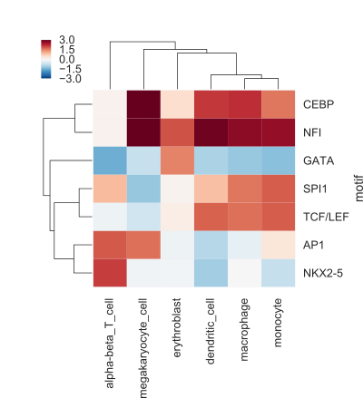

Motifs in DNase I peaks¶
Exercise 12.1 {-}¶
The exercise for this week is to compare the relation between transcription factor motif presence and DNase I signal in different cell types.
The result of your code should be a figure like the following (the values here are not real, but only shown for illustrative purposes):

This heatmap shows, for every cell type and motif combination, the difference of the mean signal for regions with a motif compared to regions without a motif.
Data {-}¶
In the directory /scratch/cfb/dnase_motifs/ you will find two files:
DNase_table.tsvmotifs.txt
In addition, the human genome (version hg38) is present here:
/scratch/genomes/hg38/hg38.fa
The file DNase_table.tsv looks like this:

This tab-separated file contains DNase I signals for six hematopoietic cell types in 10,000 genomic regions. The DNase I reads were counted, log2 transformed and normalized by scaling.
The file motifs.txt contains the name and consensus sequence for seven motifs.
Retrieving sequences from a genome FASTA file. {-}¶
You can use the pyfaidx module to retrieve specific sequences from a FASTA file based on genomic coordinates. See the documentation of the module here.
First, you create a FASTA object.
Then, you can retrieve sequences in a dictionary-like approach.
TCATGACCATAGAGAACAGACTAAAGCATATGCAGTAACATATAGAAGCATTTTTATTCATATATATGgaaagcctggaagcaatgacatcttagttgca
Approach {-}¶
Think about your approach before you start writing code! You will have to:
scan sequences with the motif consensus sequences;
determine, for every motif, which sequences have a match to the motif;
calculate the mean signal, depending on the motif occurrence;
calculate the difference in mean signal of sequences with a motif match and without a motif match.
Questions {-}¶
Make a correlation plot of the DNase signal in these hematopoietic cel types? Is this what you expect?
Which motifs are specific for certain cell types?
Does this agree with the literature?